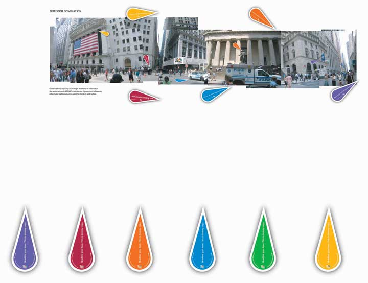
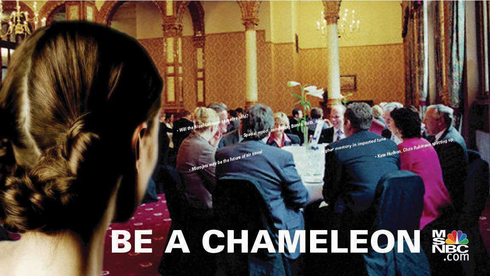
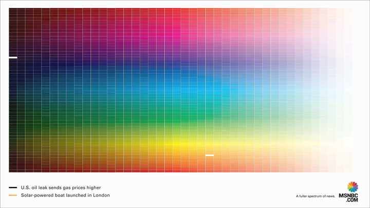
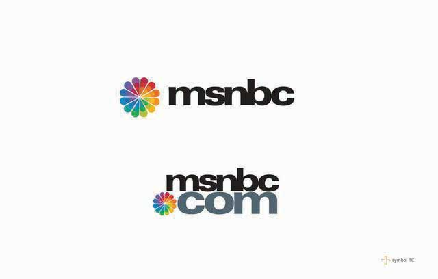

After studying this section, students should be able to do the following:
Before diving into the many elements of the new branding campaign, SS+K had to crack the creative code and come up with the concept of the campaign. Sam and Matt worked off of the brief we showed in Chapter 10 "Plan and Buy Media: SS+K Chooses the Right Media for the Client’s New Branding Message" and proposed three options for msnbc.com.
Amit organized an internal meeting in preparation for the client creative meeting. There, the team reviewed each of the creative approaches that Matt and Sam presented and ensured that everything was “on brief” or “on strategy”; this means that it communicated in a way that would motivate the News Explorer to check out msnbc.com.
Then Joe Kessler and Amit, Matt, and Sam held the initial creative meeting with Catherine Captain and a few members of her executive team—Charlie Tillinghast (president of msnbc.com) and Jennifer Sizemore (editor-in-chief of msnbc.com). The SS+K team presented three campaign options. You can see each of these in the figures below.
Figure 11.2
One campaign option presented was called “Feathers”; it used the feathers from the iconic NBC peacock to represent different stories going on around us.
Figure 11.3
Another campaign option was called “Chameleon”; it tapped into the insight of being many colors or knowing many things for situations like the ones depicted in the ads.
Figure 11.4
The other campaign option was called “Spectrum”; it utilized a spectrum of colors to represent the depth and breadth of stories available on msnbc.com.
Also, as you’ll notice in Figure 11.4, SS+K proposed an update to the previous msnbc.com logo. Matt Ferrin started with the idea of a pinwheel to visually communicate the ideas of the full spectrum. This idea generated discussion about changing the client’s logo (never an easy decision) to make it part of the new branding effort.
Can you guess which campaign the team decided to use? If you were the client, which would you choose, and why?
Amit Nizan, Matt Ferrin, and Sam Mazur
(click to see video)Amit, Matt, and Sam discuss the significance of this decision from the agency’s perspective.
Now that the campaign creative approach was decided (as you learned in Chapter 9 "Choose Your Communication Weapons: SS+K Decides Upon a Creative Strategy and Media Tactics"), and the media planning was done (as you learned in Chapter 10 "Plan and Buy Media: SS+K Chooses the Right Media for the Client’s New Branding Message") it was time to start planning the full production.
Once msnbc.com had the strategy laid out with SS+K, it was time to start producing the materials for the media that had been bought, as well as materials for other marketing efforts outside of unpaid media, which we’ll cover later. The team was also hard at work on the new logo. In developing the new logo, Matt and Sam worked very closely with the design team at SS+K led by Alice Ann Wilson.
Figure 11.5
Here are some different graphic elements and fonts the team explored.
Figure 11.6
Figure 11.7
Figure 11.8
The client’s new logo incorporates a Web-friendly updated image.
The team also needed to develop a set of brand guidelinesA set of principles, established and approved by the agency and the client, that dictate how the brand should behave, look, and feel, staking out a clear brand identity.. These guidelines, established and approved by the agency and the client, dictate how the brand should behave, look, and feel. All communication must stay consistent in order for the brand to project a clear image in consumers’ minds rather than confusing them with different messages about the brand’s identity.
Print advertising works well for factual information, especially complex messages and topics that the consumer wants to investigate, such as health-related messages. The best executions are those that we specifically develop for print, especially when the message requires us to lay out detailed, logical arguments in favor of our cause or brand.
Pharmaceutical company Pfizer, maker of the Nicorette brand of smoking cessation products, works hard to refine its print executions. Ben Peters, Pfizer’s Nicorette sector marketing manager for UK/Ireland/Central and Eastern Europe/Russia, explained the elements of successful print execution: “Key learnings that we have found at Pfizer include making sure the core message is communicated, that the reader is engaged quickly and can easily read the supporting text. The execution must also be placed in an appropriate section within the newspaper.”Alasdair Reid, “Newspaper Advertising—The Creative Potential: What Makes a Great Newspaper Ad,” Campaign, January 20, 2006, 32. Engaging the reader quickly means a catchy headline that grabs attention. To reinforce the brand even among readers who are simply scanning the pages, the branding element should be prominent within the ad.
Newspaper ads that work well provide news value, blending into the newspaper medium. “Great ads combine headline, layout, illustration and copy with a creative dynamic to add news value and talk in my language,” claims Jerry Hill, executive vice president of Initiative.Alasdair Reid, “Newspaper Advertising—The Creative Potential: What Makes a Great Newspaper Ad,” Campaign, January 20, 2006, 32.
SS+K, The Media Kitchen, and msnbc.com agreed that newspaper wasn’t the best medium for this particular branding campaign. The print production manager at SS+K, Jeannie O’Toole, was part of this discussion. Because the color blocks used in “Spectrum” are so distinctive, Jeannie advised that re-creating the art on newsprint would not be adequate. Newsprint absorbs ink so well it causes a phenomenon referred to as dot gain and the ink has a greater chance of bleeding outside its designated boxes. These issues could result in an unclear communication: each of the color boxes represents a story, so if the ad isn’t executed properly, it will just look like a bunch of fuzzy boxes and the story will be lost.
As newspapers confront declining readership rates among young people, some of them are hedging their bets as they develop online versions. Since people increasingly access their news on the road, some see the future of newsprint as real estate on a cell phone screen. However, it’s not a simple matter to transfer a newspaper page to a much smaller reading area—the fine print becomes unintelligible. Information needs to be presented in more compact “bytes” rather than in prose-length paragraphs. For this reason, a new niche is opening as providers spring up to create mobile versions of newspapers. One such company is Verve Wireless; it provides mobile versions of four thousand newspapers. It recently developed an iPhone application for the Associated Press that allows a user to scan the day’s headlines, send articles to friends, and save articles to read later. Publishers can upload local ads to their cell phone sites, and the service can deliver targeted ads to specific readers who have searched for articles in past editions of the (mobile) newspaper.Claire Cain Miller, “A Means for Publishers to Put a Newspaper in Your Pocket,” New York Times Online, July 28, 2008, http://www.nytimes.com/2008/07/28/technology/28verve.html (accessed July 28, 2008). Is this the future of today’s hard-copy newspaper?
Executing advertising in magazines requires not just good copywriting but also clever use of powerful images. The visuals that get people’s attention often offer some element of surprise. One of the photos considered the best in the history of advertising was created by the Saatchi and Saatchi agency to encourage use of contraceptives. It featured the photo of a man—pregnant—with the caption, “Would you be more careful if it was you that got pregnant?”
Magazines support higher resolution images and better color reproduction than do newspapers. Thus, good execution of magazine ads involves a tight link between the art and copy. For example, the headline, “And you think seat belts are too confining?” makes a powerful statement when it’s coupled with a photo of a covered dead body strapped tightly to a gurney.
Matt Ferrin, Sam Mazur, and Amit Nizan
(click to see video)Hear about the relevance and production stress related to the print media buy.
Subject matter, composition, color, and lighting all play a role to create the proverbial thousand words that an image can convey. These principles apply to camera angles on still images in print as well as on billboards or in moving images like TV.
Among the key decisions creatives make on a photo shoot is the camera angleA key decision creatives make on a photo shoot; camera angle establishes a relationship between the viewer and the image, making the viewer dominant, subservient, or equal. onto the subject. The angle of the camera establishes a relationship between the viewer and the image. If the camera angle is straight on, the viewer is in a position of equality with the person or object in the image. If the camera looks down on the image, it suggests that the character or object is in a subservient role relative to the viewer. Conversely, a camera angle looking up at the character or object puts the viewer into the less dominant role. When the Burton Snowboard Company started to sell gear for women, the company redesigned its Web site after it got negative feedback from female riders who complained that the images made them look like snow bunnies. Now, it shoots female models from the bottom looking up, which makes them look more empowered.Rebecca Gardyn, “Granddaughters of Feminism,” American Demographics (April 2001): 43–47.
FramingA key decision creatives make on a photo shoot; framing may be close-up, long shot, frontal, oblique, etc. also plays a role in our reaction to and interpretation of the image. A close-up puts us in an intimate or personal relationship with the image, whereas a long shot represents an impersonal relationship. Similarly, a frontal angle involves us with the character, whereas an oblique angle detaches us from the character. Burton Snowboard framed the product shots in its men’s section feature to feature tighter shots of the gear itself, since Burton’s research showed that males are interested in the board’s technical details.Rebecca Gardyn, “Granddaughters of Feminism,” American Demographics (April 2001): 43–47.
The art director is responsible for selecting the image that will be used in the print communication (and all communication for that matter). An image can either be bought or shot. Stock photo agencies like Getty Images are an example of a resource where art directors can search a database to see if the image they have in mind for an ad already exists. If it does, the art director works with the art buyer at the agency to secure the rights to use that image.
If the image doesn’t exist in stock, a photo shoot is recommended. The art buyer reviews and selects different photographers or visual specialists to present to the art director. The art director evaluates their portfolios and may have a few meetings with the different photographers to determine their comprehension of the creative vision. Once a photographer is selected by the art director, the associated costs are compiled by the art buyer. The account manager is responsible for keeping the client involved in the status of the project and staying within budget.
As a medium, TV is powerful because it combines elements that can’t be used in print or radio alone. Art directors can blend words with images—real or animated—and music. TV can demonstrate products, but it also can create moods via graphic images and sounds. Coordinating all these elements requires multiple participants on the agency side to manage the creative process, storyboards, and copywriting, as well as a producer to oversee all the activities related to the broadcast production.
Producing the TV commercial often requires hiring a production company, which will have its own director in charge of film, a producer in charge of the production crew on each shoot, a production manager who oversees logistics like dressing rooms and food service, a camera department, an art department, and editors who create the final commercial, or “spot,” in postproduction through cutting and joining frames and audio. There are different considerations that the producer must manage depending on whether the spot is live action or animation. Live action also involves casting, auditions, wardrobe, talent contracts, and so forth. Animation projects may not involve a traditional “shoot,” but as the production process is very exacting, it is important for all producers to manage the steps of the process and for account managers to identify the correct points of client approval.
Justin Timberlake 2007 Super Bowl Commercial—Behind the Scenes
(click to see video)This video includes an interview with Justin Timberlake and behind-the-scenes footage to show how the commercial was made.
Another very important function of producing television spots is sound. Dialogue between characters in a spot is one main sound, and VO or voice-over is another common sound element used in television spots. A voice-over is used sometimes as an announcer and sometimes as a legal blip at the end of a spot.
The music supervisor oversees the sound design, the music, and the mix. Sound designThe audio elements that enhance the story being told by the visual. refers to the audio elements that enhance the story being told by the visual. These elements are specific to frames or movements within the spot. MusicIn a TV commercial, a background track that runs throughout, whose purpose is to create and reinforce the emotional tone throughout the communication. is a background track that runs throughout a commercial spot. The purpose of this sound is to create and reinforce the emotional tone throughout the communication. The mix or final mixIn a TV commercial, the blend of the married elements of dialogue or voice-over (VO), sound design and music so that the desired story is achieved. blends the married elements of dialogue or VO, sound design, and music so that the desired story is achieved. Executing well in TV requires great attention to all these details.
Matt Ferrin, Sam Mazur, and Amit Nizan
(click to see video)Matt, Sam, and Amit discuss the TV production process for the msnbc.com TV spots.
Executing well in radio requires strong copywriting. “The mistake that people make is in thinking that radio is just sound without any visuals,” said Paul Brazier, executive creative director, Abbott Mead Vickers BBDO. “In truth, radio is one of the most visual mediums that demands discipline and tightness of communication. Radio script writing teaches you about tone of voice and forces creatives to think visually.” Sound effects reinforce the images copy creates. The “PSST!” of a beer bottle being opened or the reverberating sound effect of a stadium sound system helps pull the listener into the ad’s storyline.Quoted in Martin Pazzani, “Making the Most of Music,” Advertising Age, June 11, 2007, 21.
Executing well in radio also means paying special attention to music. Indeed, the music itself can be part of your brand (such as NBC’s three-tone sound trademark, heard for many years at the beginning of NBC TV shows when the peacock logo was displayed). Some companies simply license a current hit or a classic song to convey a feeling. Although it’s true that music gets attention and creates an emotional conduit, licensing an existing song has three downsides:
To avoid these downsides, some companies feel it’s worth the money to commission original music to uniquely suit the brand. Rather than being an add-on, the music becomes a branding tool in itself. Original music can grow with the brand as needed. It can also be written with specific ethnicities or demographics in mind while it maintains the core theme.
Two companies understand the strategic role of music particularly well. McDonald’s’ “I’m Lovin’ It” tagline and audio logo has become a powerful mnemonic device for brand recognition. McDonald’s Chief Marketing Officer Mary Dillon believes that “marketers who do not understand the power of music will quickly be left behind.” And the TBWA/Chiat/Day agency has created a unique and distinctive sonic personality for Infiniti that perfectly matches the cars themselves. The original music and sound, which is unlike any other brand’s jingle, creates a very contemporary feel.“Those Who Get It—And Those Who Just Don’t,” Advertising Age, June 11, 2007, 21.
Research on effective versus ineffective radio ads identifies these factors as having the greatest impact:“Is There a Crisis in Radio Creativity?” Campaign, March 30, 2007, 19; Radio Ad Effectiveness Lab, “Radio Effectiveness and Execution,” March 2004, http://www.rab.com, by paid subscription (accessed February 12, 2009).
Fans of R&B singer Chris Brown may have noticed a brief reference to an old chewing-gum jingle in his hit song, “Forever,” when he sings, “Double your pleasure/double your fun.” They found out why when the Wm. Wrigley Jr. Co. revealed in a press conference that the song actually is an extended version of a new commercial jingle that the singer wrote to promote Doublemint gum. The ad agency Translation Advertising signed three different performers to update the company’s chewing gum brands with new jingles: in addition to Brown, R&B singer Ne-Yo does his own version of Big Red’s “Kiss a Little Longer” jingle, and Dancing With the Stars regular Julianne Hough recorded a twangy version of Juicy Fruit’s “The Taste Is Gonna Move Ya.” The Wrigley campaign shows how the deep the ties run between advertising and the music industry—and how much deeper they’re getting. As the head of the agency noted, the strategy was to connect the song with the jingle from the start: “By the time the new jingle came out, it was already seeded properly within popular culture.”Quoted in Ethan Smith and Julie Jargon, “Chew on This: Hit Song is a Gum Jingle,” Wall Street Journal, July 28, 2008, B1.
Outdoor advertising has been around since the late 1800s, when posting “bills” on wooden boards led to the birth of the term “billboard.” Today, the out-of-home category includes not only the roadside billboards but also “car cards” in public transportation; in-store displays; and displays in airports, sports arenas, transit shelters, and ski areas—even on rocket ships!
Although a billboard seems like a magazine ad that’s just printed on a mega scale, that’s not the case. Billboards use more images and less copy than do print ads. Executing well on billboards means creating a visual image or short phrase that gets the message across quickly—literally in the blink of an eye.
One key characteristic of outdoor advertising is that it is situated in a fixed context: a physical environment that provides room for the ad to connect to or play with. Billboards are not restricted to their rectangular spaces, like print or TV ads; they can burst out into space. For example, a Bic Shaver billboard shows the shaver seemingly trimming the surrounding grass. Adidas created a larger-than-life David Beckham billboard that has him lunging to catch a soccer ball across the highway. The Adidas billboard stretched across above the highway, with traffic from one side seeing Beckham from the front and traffic from the opposite direction seeing him from the back. These types of billboards are referred to as “spectaculars,” because they are just that!
Outdoor advertising is branching off in new directions as billboards morph into stages that let onlookers interact with them. As an example of how outdoor advertising can go viral, a recent commercial for Oreo revolves around passersby who react to the sight of an elevator done up as one of the cookies repeatedly dunking itself into a glass of milk when it descends. The spot got a lot of attention on YouTube.
Oreo in an Elevator
(click to see video)Outdoor advertising, like this Oreo in an elevator, can attract attention in nontraditional ways.
Some of these attempts may backfire or fail to deliver a clear message as they push the envelope. A Chevrolet billboard that used real pennies was stripped clean within thirty minutes. In Singapore, advertisers painted an extra yellow safety line on a train platform with the name “Wonderbra” on it, leaving commuters to figure out the message (that the bra’s lifting qualities were so forceful that wearers would have to stand back). A recent outdoor campaign for Right Guard in London is a contender for biggest flop (at least for now): teams of actors invaded subway cars with tiny video screens in the armpits of their shirts. Whenever one of them reached up to grab a strap while riding the train, a commercial for Right Guard played in the face of a “lucky” fellow strap-hanger.Stephanie Clifford, “Summer Silliness Brings a Pizza Field and a Giant Oreo,” New York Times Online, August 1, 2008, http://www.nytimes.com/2008/08/01/business/media/01adco.html (accessed August 1, 2008).
Technology is transforming the humble billboard in fascinating ways. Digital billboardsAn electronically enabled outdoor advertising medium that can change messages instantly and may be interactive, for example, letting passersby download a song or kick a virtual football. change messages instantly. They can also be Bluetooth-enabled. For example, billboards in the London subway let passersby download selections from the latest Coldplay album. Other billboards, in shopping malls, have virtual footballs teed up that passersby can “kick” on an interactive floor display. These new technologies let consumers interact with—and be immersed in—outdoor advertising as never before. This floor technology is similar to an interactive projection that inspired the msnbc.com interactive movie game NewsBreaker Live.
Amit Nizan, Matt Ferrin, and Sam Mazur
(click to see video)Matt Ferrin, Sam Mazur, and Amit Nizan discuss the technological inspiration that led to the interactive NewsBreaker Live game that played in movie theaters.
Jack Sullivan, senior vice president of out-of-home media at Starcom, sees this trend increasing as the population becomes even more wireless. “Consumers are out there with downtime on the streets. If you can get them to play, to interact with your sign, you are being invited into that decision maker’s lifestyle and they are opting in to share their personal time with you; it hopefully is having a heck of a lot more impact and is leading to increased sales.”Quoted in Tony Case, “Take it Outside: A Surge in Interactive Out-Of-Home Messages Revitalizes the Oldest Ad Medium,” Brandweek, November 6, 2006, 16.
As SS+K discovered, movie theaters are a prime venue to reach consumers, and (like it or not) it’s common for commercials to appear before the feature. Now, a company called Cinescent is testing a system that pumps out the scent of an advertised brand along with the video. The first execution occurred recently in Germany for Nivea; a sixty-second spot showed a typical sunny beach scene and then suddenly the scent of Nivea sun cream was released along with the Nivea logo on the screen with the words, “Nivea. The scent of summer.” This test made quite an impression: exit polls showed a 515 percent rise in recall for the Nivea ad compared with moviegoers who saw the spot without the odor.Emma Hall, “What’s That Smell in the Movie Theater? It’s an Ad,” Advertising Age, July 24, 2008, http://www.adage.com (accessed July 28, 2008). This kind of creative execution seems to make sense—though there are some advertisers who should probably avoid the temptation to pump smells people associate with their products into crowded places (we’re talking to you, Nike).
Point-of-purchase (POP) advertising is designed to drive immediate—and usually impulse—purchases. Effective POP messages appear as close as possible to the time and place when the consumer makes the purchase decision. The message must either provide news about the product or offer a price incentive.
Just as billboards are going digital, so are POP displays. Digital technology adds value to POP because it lets the message change hourly, daily, or weekly—whenever the advertiser chooses. This lets advertisers keep the message fresh and new.
Digital POP also lets advertisers use motion or animation to attract the consumer’s eye or to time offers to suit the time of day or even the weather. “The cliché example is to offer soup on cold days and ice cream on hot, but it can be infinitely more clever than that,” said Angela Walters of Eye Shop, a company that designs digital POP systems.Quoted in “Viva La Revolution: The T-Shirts Read Born to Shop; Indeed, Shopping’s Been Called a National Pastime,” AdMedia, August 2007, 28.
In many ways, online advertising blends the properties of the other media while it adds unique characteristics of its own. Executing in the online medium means drawing on the lessons of other similar media, while taking advantage of its unique capabilities.
Billboards: Online advertising borrows from billboard sensibilities because it relies more on images and less on verbose copy. A banner ad is like a billboard on the information superhighway.
TV: Online ads are like TV commercials in that they can show moving images that tell a story or create dynamic visual interest. With the rise of broadband, advertisers also can use full-motion video. But executing video for a Web ad is different from regular TV in that the low resolution and frame-rate of images forces the production to avoid overly detailed and fast-moving scenes.
Print: Online text ads, such as Google’s AdWords, have similar executional issues as do print ads, especially small classified ads. The advertiser has but a few words in which to interest and motivate the viewer.
POP: Online ads share executional qualities of POP ads in that well-executed online ads trigger the impulse to click through and respond to the advertised product or service. These messages also offer the immediacy of POP ads in that both ad forms encourage the consumer to put the items directly into her shopping basket.
The team’s research clearly showed that the News Explorer would most likely be found online. SS+K worked with BEAM Interactive to create new and dynamic Web-based ads that would resonate with this wired consumer and support the msnbc.com brand.
Amit Nizan, Matt Ferrin, and Sam Mazur
(click to see video)Sam Mazur, Matt Ferrin, and Amit Nizan discuss the production of the banner ads for the “Spectrum” Campaign and the importance of trust between collaborating agencies and the client.
Interactivity: The biggest difference between online ads and other advertising forms is the ability to interact with the ad. In some online ads, even the act of moving the mouse can cause the ad to change in response. Interactive ads let viewers access more information, tell the advertiser about themselves, interact with the product in simulations, or be entertained by a game. Executing for interactivity means crafting an invitation to the viewer to interact with the ad, creating a user interface or game play that is both simple and engaging, and developing an interactive space that reflects the values of the brand (e.g., a youthful game versus a serious, informative presentation).
Specificity: Online advertising permits great specificity in terms of who sees the ad and in what context. The use of cookies tells site owners and advertisers who views the ad. Many registration-based sites collect key demographic data such as the user’s address, age, interests, and browsing history. The use of this information in planning online media is called behavioral targetingIn online marketing, the use of key demographic data, such as the user’s address, age, interests, and browsing history, to plan online media.. The ability to “buy” keywords means that advertisers can target very narrow contexts. Executing well in interactive media means picking the target demographic and choosing keywords that reflect the type of customer you seek.
Another element of the msnbc.com campaign was search engine marketing (SEM)The technique of choosing keywords and other features for a Web site to increase consumers’ ability to find and visit the site; SEM may involve paid keywords, which show in the “sponsored” section of search engine results, or natural search. and search engine optimization (SEO)The technique of choosing optimal keywords and other features for a Web site to boost its prominence in search results, thereby increasing consumers’ ability to find and visit the site via natural search.. Interactive agency 360i worked with msnbc.com to internally optimize the site setup so that search engines could find data more easily, thus resulting in higher natural searchThe results listed when a consumer enters a search term in the browser and clicks on search results that are displayed by the engine with no indication of sponsorship. results, which are the results of a Web search that are not sponsored. 360i also ran the SEM campaign by identifying keywords specific to msnbc.com, the new brand, and timely news. These paid searchThe results listed when a consumer enters a search term in the browser and clicks on search results that appear at the top or side of the page with indication of sponsored links. results show up in the “sponsored” section of search engines.
To keep advertising dollars from bleeding away from their newspaper pages, dailies have moved online themselves, putting up Web sites with news and information to attract online readers and advertisers. But simply posting a full-page print ad on the newspaper’s Web site doesn’t work. “People don’t want to see a flat ad on the Internet,” said Kathleen Cunningham, president of Advanced Marketing Strategies. “They want it interactive with multiple pictures.”Mark Larson, “Digital Format Presents Rubik’s Cube of Challenges to Advertisers,” San Diego Business Journal, July 9, 2007, 14.
One solution to building in interactivity is the new genre of advertising we have called branded entertainment, where the ad seamlessly integrates a product into a piece of entertainment. BMW pulled this off masterfully with its series of Internet movies several years ago. BMW’s agency GSD&M was inspired when they discovered that 85 percent of Beemer drivers visited the company’s Web site before they bought a car. The campaign team hired eight top film directors to make short films featuring BMW cars. The films were a great success—they were viewed ten million times in the first year—and two million people registered on the BMW site after watching them. In addition, 60 percent of those who registered on the site opted in to receive e-mails.
One of the best BMW movies, entitled Hostage, worked so well because it put emotion to work for the brand. It built the image of the brand in the mind of the consumer by putting the driver into a heroic role of a modern-day gunfighter who saves the day with the help of his BMW Z4. The movie worked because the car wasn’t simply a product placement—it was the instrument of the story. If the car weren’t so fast or didn’t have superior handling, it wouldn’t have let the driver triumph. One of the series’ producers remarked, “The BMW brand is in there as a character, but these aren’t really commercials. We think it’s the way lots of things will go in the future. More product placement than advertising.” When consumers were tested after seeing the movie, they perceived the BMW brand as: “a leader in innovation” and “dominating the luxury car category” and “an exhilarating driving experience.”Quoted in Aaron Barnhart, “The Internet Driving Machine; BMW Films Web Site Makes the Most of Ultimate Product Placement,” TV Barn, June 19, 2001, http://blogs.kansascity.com/tvbarn/2001/06/the_internet_dr.html (accessed July 29, 2008).
The total spending on alternative media in 2006 was $387 million, which is a small fraction of the total spent on all advertising. How effective these media are remains to be seen, although it’s clear that they are attracting attention. One of the challenges for alternative media is simply finding new places to advertise. “We never know where the consumer is going to be at any point in time,” says Linda Kaplan Thaler of the Kaplan Thaler Group, a New York ad agency, “so we have to find a way to be everywhere.” New alternate media vehicles include Chinese take-out cartons and pizza boxes, school buses that play kid-friendly radio ads, and tray tables on airlines.
Marketers constantly experiment with novel ways to reach audiences that get harder and harder to reach. Procter & Gamble created a new medium when it printed trivia questions and answers on its Pringles snack chips with ink made of blue or red food coloring, whereas a company called Speaking Roses International patented a technology to laser-print words, images, or logos on flower petals.“Read My Chips? Pringles Has Plans to Print Jokes, Trivia on Its Potatoes,” Wall Street Journal on the Web, May 20, 2004, C13; David Serchuk, “A Rose with Another Name,” Forbes, December 27, 2004, 52.
School buses and airplanes boast “captive” audiences—the consumers who are there almost can’t help seeing or hearing the ad. Walt Disney has even ventured into the doctor’s office, advertising its “Little Einsteins” DVDs for preschoolers on the paper liners of examination tables in two thousand doctors’ offices. US Airways sells ad space on its motion-sickness bags—although we’re not sure if a passenger using the bag is the best target for an ad, unless it’s for a product like Pepto-Bismol or Dramamine. Some supermarket eggs show up stamped with the names of CBS TV shows on their shells. However, these innovative executions risk alienating people if they become too intrusive. “Got Milk?” billboards at some San Francisco bus stops emitted the aroma of chocolate chip cookies; they prompted enough complaints from citizens that the city asked the California Milk Processing Board to turn off the smell.Louise Story, “Is There No Escape? In Their Efforts to Grab Consumers’ Attention, Advertisers Seem Determined to Fill Every Available Space,” New York Times, April 2, 2007, 6.
As we’ve seen, mobile advertising continues to evolve as a message platform. Recently, several companies introduced innovative technologies to make this medium more effective for the growing army of iPhone users (85 percent of whom already access the mobile Internet). For example, a firm called JumpTap launched technology that allows an advertiser to place an “Action” icon within an ad that appears on the phone; this in turn allows users to launch video (via YouTube), audio, maps, and Web sites. Universal Pictures promoted the movie The Mummy with mobile ads that included a trailer of the flick and a tool to find local showtimes.Mark Walsh, “iPhone Spawns New Ad Networks,” Online Media Daily, July 25, 2008, http://www.mediapost.com/publications/?fa=Articles.san&s=87317 &Nid=45412&p=407056 (accessed July 25, 2008).
If you’ve got $10,000–15,000 eating a hole in your pocket, you can even put your own illuminated personal ad or a corporate logo on your tire rims. Check out the bling at http://customwheel.com/custom_wheels/product_info.php/products_id/1687.
Each media platform possesses unique characteristics; some executions work better on one than another. Print (especially newspaper) works best to present factual information, while TV, magazines, and billboards are image intensive. Online works best when the advertiser builds in a great deal of interactivity; many advertisers still make the mistake of transferring a static print ad to a Web site. Alternative media options continue to evolve and can be a great way to break through the clutter of traditional media. However, advertisers risk crossing the line when their messages become too obtrusive.